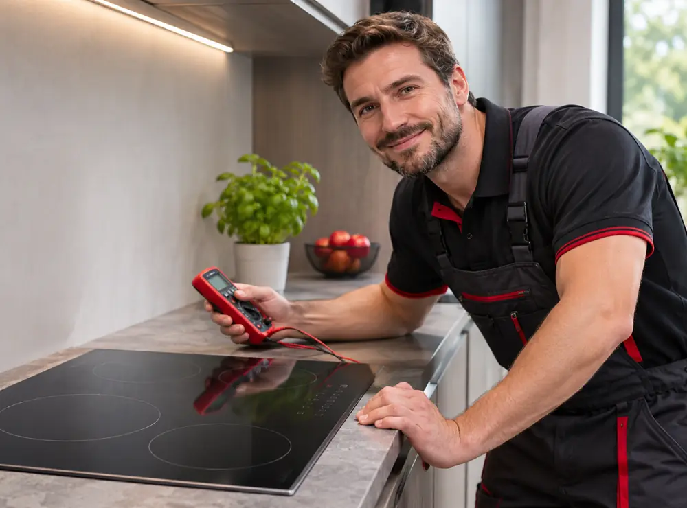

Nejdříve se domluvíme
Výjezd je zdarma. Diagnostiku při schválené a provedené opravě neúčtujeme samostatně. Cenu a podmínky si odsouhlasíte předem.
Elektro Specialist s.r.o.
Přestala vám fungovat indukce?
Indukce nerozpoznává nádobí, nehřeje, vypíná se nebo hlásí chybu? Zavolejte nám, probereme závadu a orientační cenu opravy. Termín a podmínky si domluvíme předem.
Při odmítnutí opravy může být diagnostika zpoplatněna; její cenu sdělíme před objednáním. Výjezd je zdarma. Dostupnost konkrétního dílu ověříme podle modelu. Podmínky služby.
Elektro Specialist s.r.o.

Objednávka · Středočeský kraj
Stačí telefon, místo a výběr závady. Fotografii modelu můžete přidat. Poptávka je nezávazná.
Zavolat do servisu
Vratislavova 21/26, Praha 2 – Vyšehrad
IČO: 17707943
Nezávazná konzultace
Vyberte spotřebič a závadu. Pomůžeme vám posoudit další postup a sdělíme orientační cenu podle modelu a příznaků. Nejde o automatický výpočet; konečnou cenu ovlivňuje rozsah opravy a díly.
Připravte značku a model nebo fotografii typového štítku. Pro orientační cenu nám zavolejte.
Zavolat a zjistit cenuPoslat nezávaznou poptávkuTelefonická konzultace vás nezavazuje k objednání opravy.
Proč se obrátit na nás
Výjezd je zdarma. Diagnostiku při schválené a provedené opravě neúčtujeme samostatně. Cenu a podmínky si odsouhlasíte předem.
Usilujeme o opravu při první návštěvě. Originální díly pro běžné závady vozíme s sebou; konkrétní díl ověříme podle modelu.
Elektro Specialist s.r.o., IČO 17707943. Vratislavova 21/26, Praha 2 – Vyšehrad.
Na firemním profilu Google najdete aktuální veřejné recenze a kontaktní údaje. Přečtěte si zkušenosti přímo na Google.
Jednoduchý postup
Zavolejte a sdělte model, příznak a místo. Pokud model neznáte, pomůžeme s jeho identifikací.
Upřesníme cenu opravy. Ve Středočeském kraji technik vyjíždí do 24 hodin od potvrzení objednávky. Výjezd zdarma.
Po odsouhlasení podmínek provedeme opravu, pokud to závada a dostupnost dílů umožňují. Diagnostika je při provedené opravě zdarma.
Poradna · závady
Zóna nereaguje na hrnec nebo zobrazuje symbol nádoby.
Jedna či více zón se nezapne, zatímco ostatní fungují.
Ohřev se přeruší při vaření nebo vyšším výkonu.
Ovládání nereaguje nebo není vidět displej.
Na sklokeramice je prasklina nebo odštípnutý okraj.
Na displeji se objeví kód nebo se ohřev zablokuje.
Prasklé sklo, zápach spáleniny, jiskření nebo vybavování jističe znamenají, že desku nesmíte používat. Neodstraňujte kryt, nerozebírejte výkonovou elektroniku ani pevné připojení.
Dostupnost opravy konkrétního modelu ověříme předem. Názvy výrobců slouží k identifikaci spotřebičů, nikoli jako tvrzení o autorizaci.
Připravte E-Nr a FD, pokud jsou dostupné v dokumentaci či na štítku bez demontáže. Nahlaste, které zóny nereagují.
Uveďte model a PNC z dokumentace. Rozlište nerozpoznání nádoby, blokaci ovládání a vypínání při zátěži.
Připravte model a servisní číslo z dokumentace; uveďte přesný symbol či kód na displeji.
Uveďte model, počet zón a informaci, zda se závada projevuje jen při současném vaření na více zónách.
PrahaStředočeský krajCena opravyPoradna a závadyVšechny spotřebiče
Přijímáme poptávky z měst i menších obcí. Kontaktní provozovna je v Praze; nejde o místní pobočky. Dostupnost výjezdu a dopravu potvrzujeme podle adresy.
Benešov, Vlašim, Votice, Sázava, Týnec nad Sázavou
Beroun, Hořovice, Králův Dvůr, Zdice, Žebrák
Kladno, Slaný, Unhošť, Stochov, Libušín, Buštěhrad
Kolín, Český Brod, Pečky, Kouřim, Týnec nad Labem
Kutná Hora, Čáslav, Uhlířské Janovice, Zruč nad Sázavou
Mělník, Kralupy nad Vltavou, Neratovice, Mšeno, Veltrusy
Mladá Boleslav, Mnichovo Hradiště, Benátky nad Jizerou, Bělá pod Bezdězem
Nymburk, Poděbrady, Lysá nad Labem, Sadská, Milovice
Říčany, Brandýs nad Labem-Stará Boleslav, Čelákovice, Úvaly, Odolena Voda, Kamenice
Černošice, Roztoky, Hostivice, Jesenice, Jílové u Prahy, Mníšek pod Brdy, Rudná
Příbram, Dobříš, Sedlčany, Březnice, Rožmitál pod Třemšínem
Rakovník, Nové Strašecí, Jesenice, Křivoklát, Lužná
Pošlete model, popis závady a obec či městskou část. Ověříme dostupnost a podmínky.
Cenu ovlivňuje práce, díly a případná diagnostika při odmítnutí opravy. Jak se stanovuje cena opravy.
Pomůže s identifikací dílů, ale pro první poptávku stačí značka a popis závady.
Elektro Specialist s.r.o., IČO 17707943, sídlo Vratislavova 21/26, 128 00 Praha 2 – Vyšehrad. Názvy výrobců označují servisované spotřebiče, nikoli autorizaci či zastoupení výrobce. Uvedené oblasti nejsou samostatné provozovny. Dostupnost opravy, způsob předání či výjezdu, cenu opravy a podmínky potvrzujeme individuálně; výjezd je zdarma.
Kontakt a ověření společnosti · Jak probíhá servis a nacenění · Reklamace
Ano. Elektro Specialist s.r.o. nabízí havarijní servis domácích spotřebičů NONSTOP 24/7 v Praze a Středočeském kraji. V naléhavých případech může technik přijet již do 60 minut od potvrzení objednávky, podle místa a aktuální dostupnosti technika. Přesný čas příjezdu potvrdíme telefonicky. Operátoři jsou k dispozici každý den od 8:00 do 23:00.